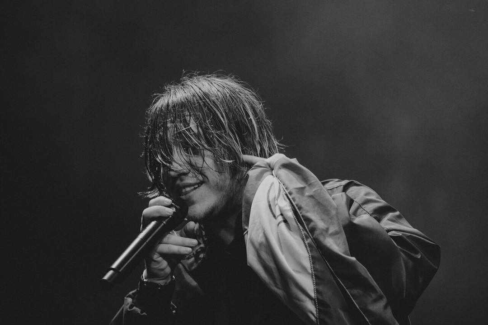

¿Quien es Paulo Londra?
Paulo Ezequiel Londra Farías mas conocido como Paulo Londra es un cantante y compositor argentino de música urbana, especialmente conocido por su estilo que mezcla rap, trap y reguetón. Nació el 12 de abril de 1998 en CórdCórdoba, Argentina. Llego a ser en uno de los artistas de trap y reguetón más influyentes en la escena musical de habla hispana. Su estilo innovador, con letras que muchas veces evitaban temas de violencia y malas palabras, lo hizo destacar en el género urbano, atrayendo a una audiencia juvenil que valoraba su autenticidad y su enfoque positivo.
